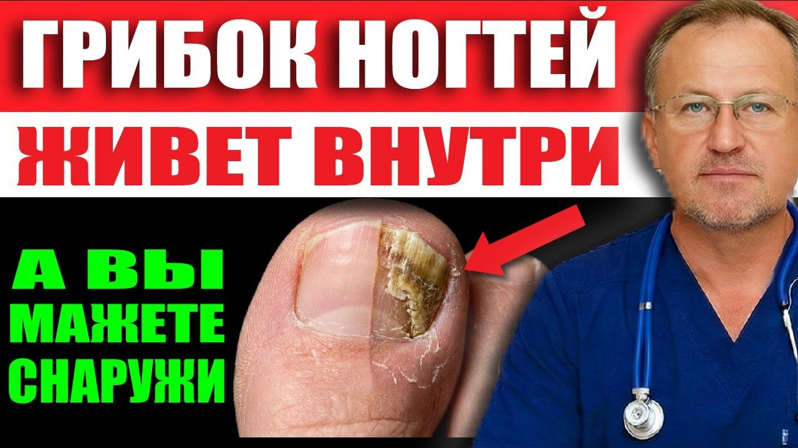
Материалы к выпуску
Съешьте это, и грибку будет нечем дышать! 7 продуктов-убийц кандиды и трихофитона
Здесь протокол из этого выпуска. Скачайте и распечатайте — так проще не забывать о главном каждый день.
Грибок избавление изнутри и снаружы
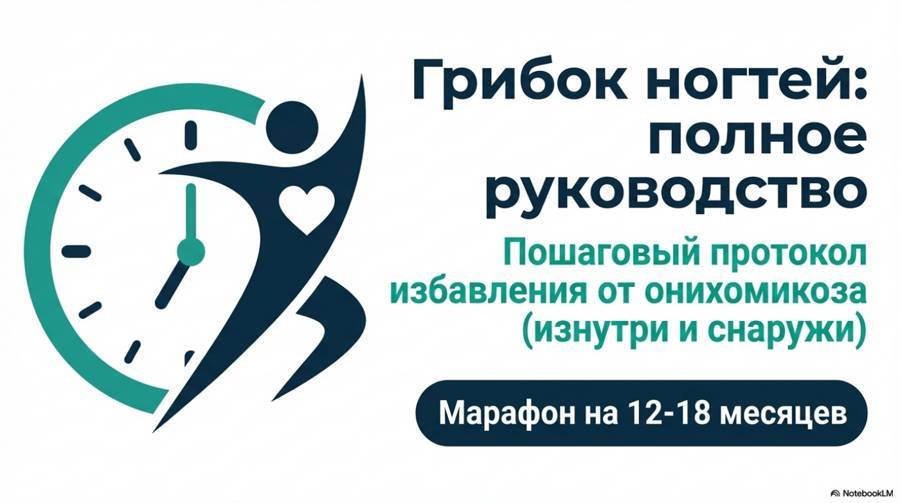
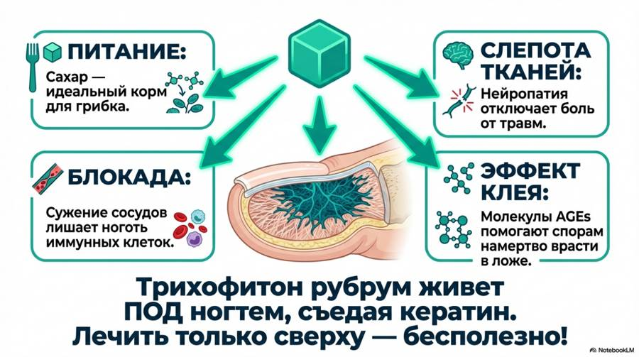
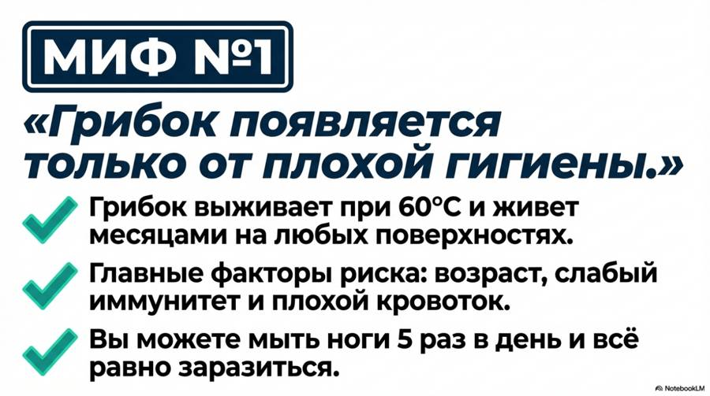
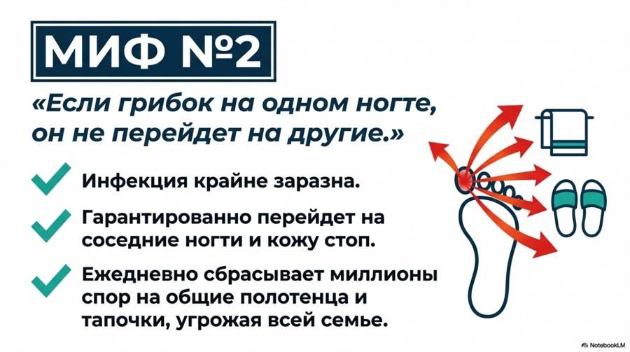
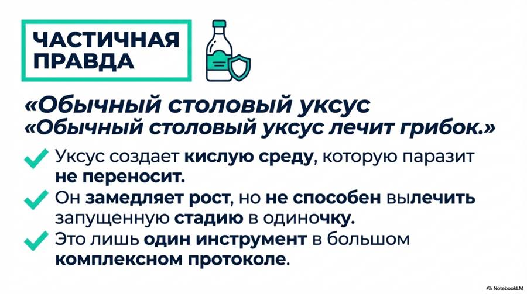
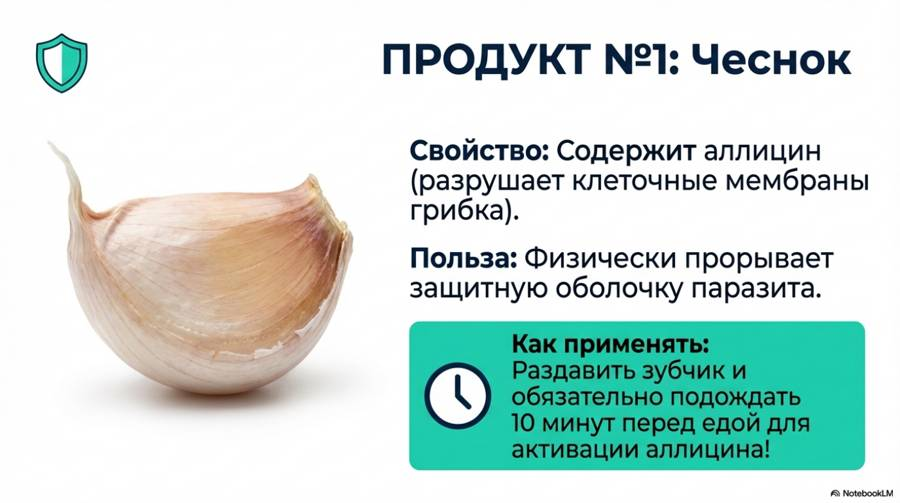
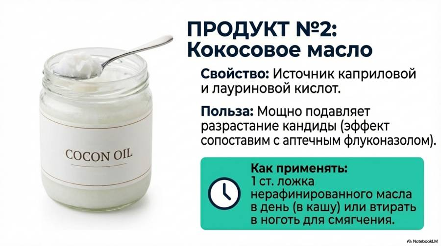
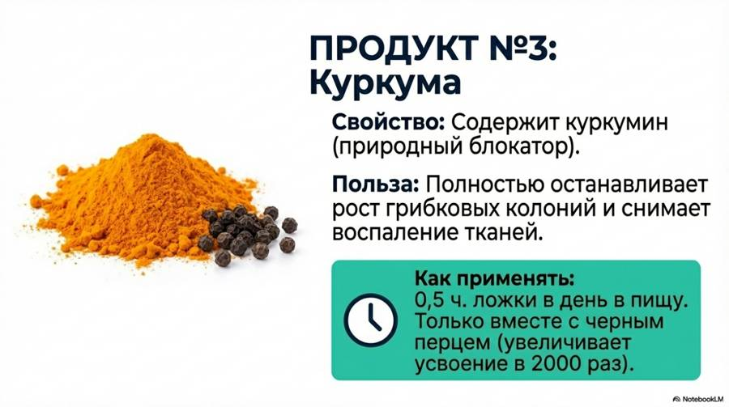
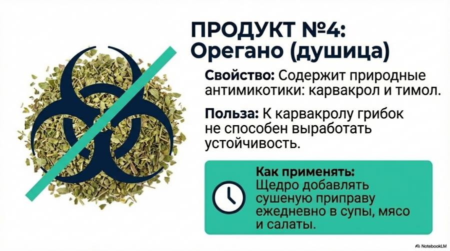
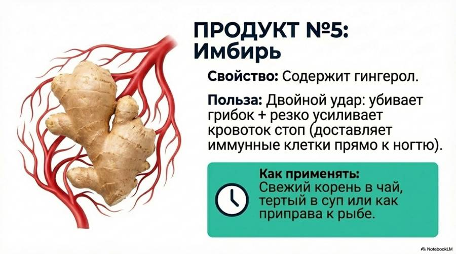
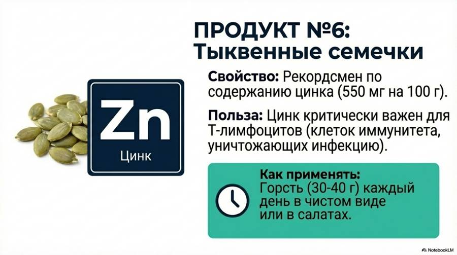
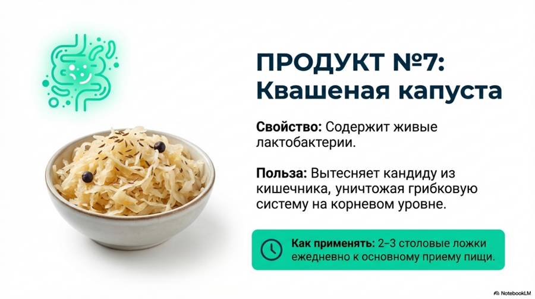
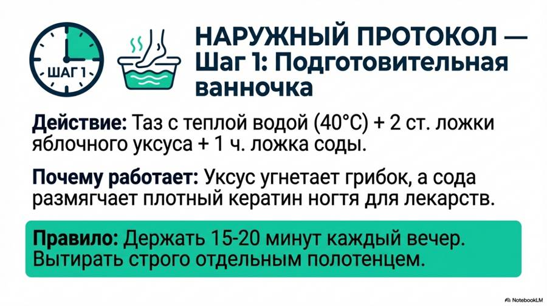
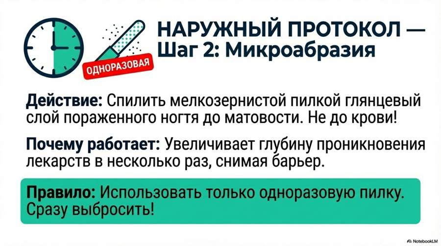
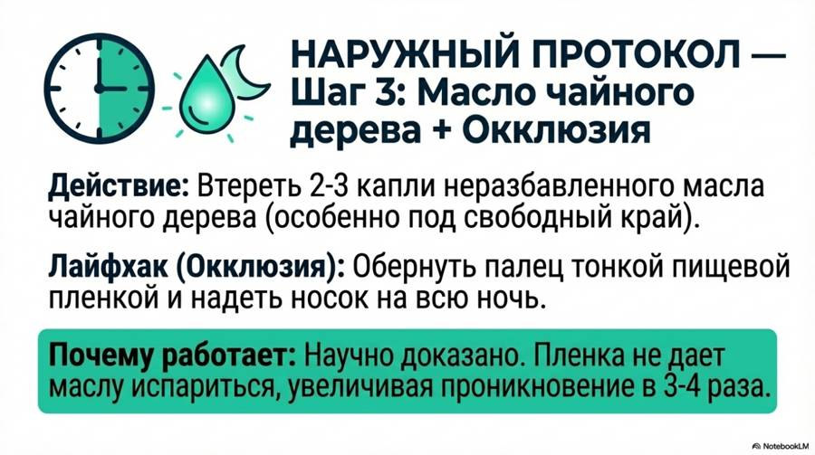
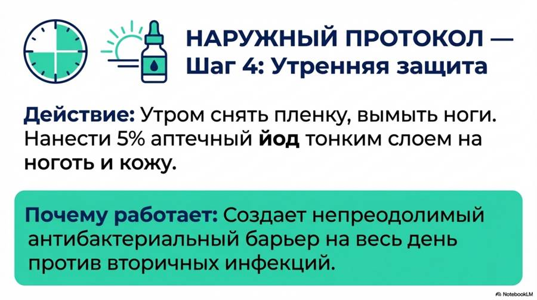
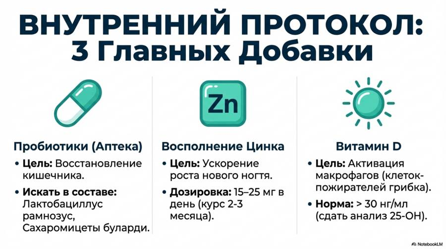
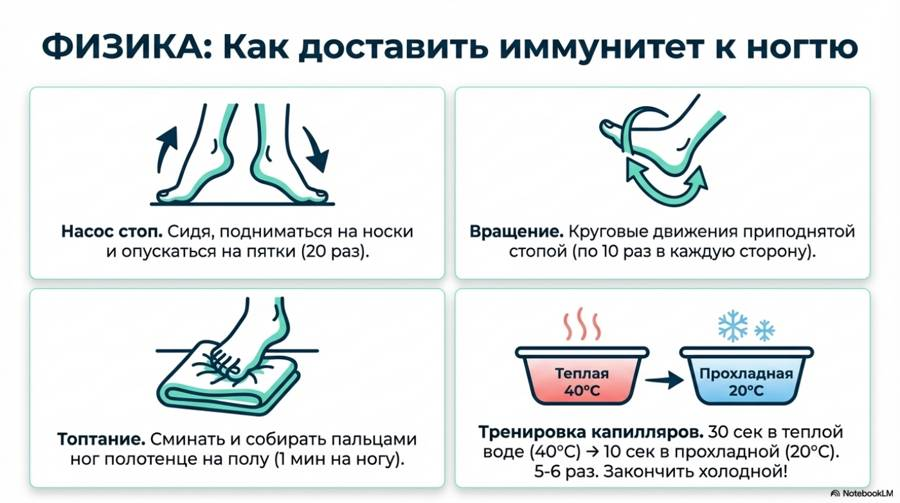
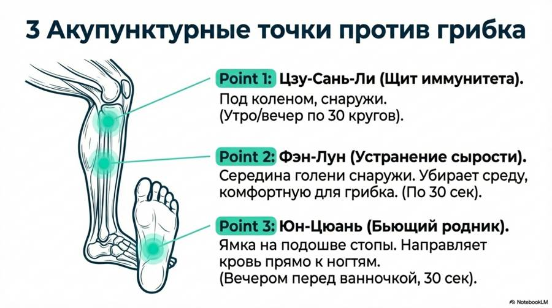
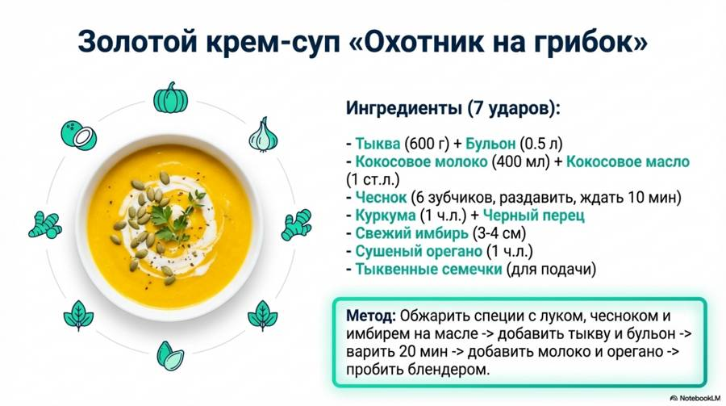
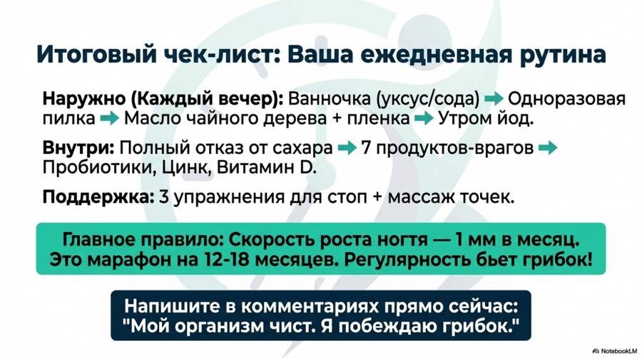
Новые выпуски и карточки — первыми в нашем Telegram-канале.
Открыть Telegram